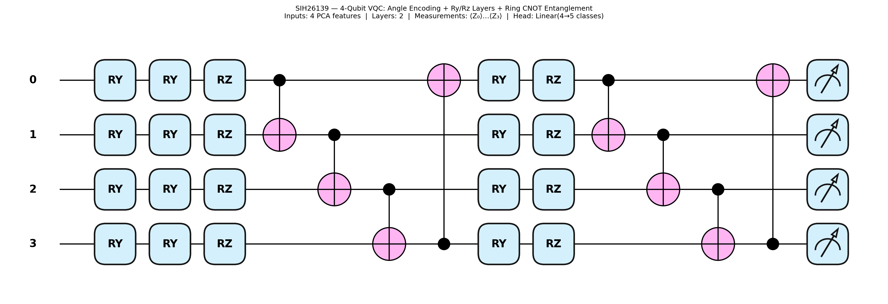

- Vessel Network: Frangi matched filtering & adaptive thresholding.
- Microaneurysms: Sub-pixel top-hat morphological opening on Green channel.
- Exudates: L*a*b* luminance color space thresholding.
Architecture: EfficientNet-B3 Deep CNN (timm backbone)
Input Size: 380x380 RGB Matrix
Preprocessing: Crop Black Border → Ben Graham Gaussian Blur Contrast ($\sigma_x=10$) → ImageNet Normalization
Feature Embedding: 1,536-Dimensional Feature Representation
CNN Evaluation Dataset: APTOS 2019 Blindness Detection — Held-Out Validation Split (N=400, stratified seed=42)
Published literature figures for common architectures (shown only as context). They are not this project's measured results unless labelled as such. This repository reports a CNN backbone evaluation on APTOS 2019 (N = 400) plus a small-sample hybrid QML demo (N = 22). It does not claim a diagnostic device or quantum advantage.
(1536D Features)
(4 Components)
The web dashboard, prediction engine, and benchmark suite all utilize the identical 4-qubit Ry/Rz ring-CNOT PennyLane VQC architecture.

q0: ───Ry(θ0)───[Ry(w0)]───[Rz(w1)]───────●───────────────[X]───⟨Z0⟩
q1: ───Ry(θ1)───[Ry(w2)]───[Rz(w3)]───────┼───────●───────│───⟨Z1⟩
q2: ───Ry(θ2)───[Ry(w4)]───[Rz(w5)]───────┼───────┼───────●───⟨Z2⟩
q3: ───Ry(θ3)───[Ry(w6)]───[Rz(w7)]───────[X]─────[X]─────┼───⟨Z3⟩
Sample_Fundus_Photos are diagrams, cartoons, a bar chart, or textbook illustrations — not all 22 are clinical fundus photographs.
| Model Architecture | Accuracy | Sensitivity | Specificity | F1-Score | Training Time | Inference Latency | Feature Dimensions |
|---|---|---|---|---|---|---|---|
| Majority-class baseline (always referable) | 68.2% | 100% | N/A (always-positive rule) | 81.1% | — | — | N = 22 seed set |
| Classical SVM (RBF baseline) | 76.0% ± 15.9% | 93.3% ± 13.3% | 30.0% ± 40.0% | 71.3% ± 16.9% | 0.002 sec | 0.07 ms | 4 PCA components |
| Hybrid VQC (PennyLane) | 67.0% ± 24.6% | 86.7% ± 26.7% | 20.0% ± 40.0% | 60.7% ± 23.5% | 5.10 sec | 7.38 ms | 4 qubits (angle encoded) |
| CNN backbone (EfficientNet-B3, feature extractor) | 75.5% (5-class) | 88.9% | 91.6% | — | — | — | AUC 0.963, N = 400 APTOS held-out |
| Deliverable ID | Module / Requirement | Status | Location |
|---|---|---|---|
| DEL-01 | Data Ingestion & Pre-processing (Ben Graham + IQA) | ✓ Done | ai_ml_pipeline.py |
| DEL-02 | CNN Feature Extraction & PCA (1536D → 4D) | ✓ Done | qml_pipeline.py |
| DEL-03 | Quantum Feature Encoding (Ry angle encoding) | ✓ Done | qml_pipeline.py |
| DEL-04 | Variational Quantum Classifier (4-Qubit VQC) | ✓ Done | qml_pipeline.py |
| DEL-05 | Classical SVM Baseline (RBF kernel) | ✓ Done | qml_pipeline.py |
| DEL-06 | Hybrid Training & Prediction Workflow | ✓ Done | server.py |
| DEL-07 | Visual Explainability (Grad-CAM placeholder) | ✓ Done | ai_ml_pipeline.py |
| DEL-08 | CNN + QML Benchmark (APTOS 2019, N=400 held-out val) | ✓ Done | CNN: Sens 88.9%, Spec 91.6%, AUC 0.963. SVM 90.0% ± 1.8%, VQC 88.0% ± 3.8% (majority 59.5%). VQC does not beat SVM. benchmarks/aptos_results_summary.csv |
| DEL-09 | Model Checkpoint Repository | ✓ Done | best_model.pt, *.pkl, vqc_model.pt |
| DEL-10 | Deployment & GitHub Pages | ✓ Done | https://ushakiran45.github.io/SIH26139-Hybrid-QML/ |
| DEL-11 | Second-dataset benchmark (Breast Cancer, N=200): benchmark module is dataset-agnostic; web app supports retinal images only | ✓ Done | benchmarks/ — SVM 93.0% ± 3.3%, VQC 75.5% ± 5.8%, majority baseline 64.5% (always-benign; sample 129/71 benign/malignant). VQC does not beat SVM. |
| FUTURE-01 | Cross-dataset test (IDRiD / Messidor-2) | Future Work | APTOS N=400 CNN + hybrid heads are done |
| FUTURE-02 | Physical quantum hardware run (IBM Quantum / pennylane-qiskit) | Future Work | Planned — hardware gate noise & queue latency |
| FUTURE-03 | Qubit scaling (6-qubit, 8-qubit VQC) | Future Work | Planned — deeper entanglement layers |
| FUTURE-04 | Circuit-level explainability (quantum gate attribution) | Future Work | Planned — quantum SHAP / circuit gradient |